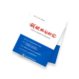

邮箱登录
English
联系方式：010-65256519
首 页
本院概况
本院简介
院长致辞
组织机构
本院资质
领导关怀
院领导班子
荣誉证书
工作业绩
企业文化
业务范围
规范咨询
智能制造
标准化
政策研究、行业课题
区域规划、园区发展
市场调研、产业链延伸
生产诊断、经济评价
节能减排、循环经济、绿色发展
海外钢铁及矿山投资规划咨询
企业规划、项目前期
技术推广
管理咨询、人力资源优化
民营钢铁研究
互联网+、智能制造综合解决方案
国家标准
行业标准
团体标准
企业标准
新闻中心
院内动态
行业要闻
通知公告
高端会议
信息服务
统计资料
书刊信息
业务培训
专家咨询
多媒体信息
党的建设
联系我们
当前位置：
首页
书刊信息
中国钢铁蓝皮书
信息服务
INFORMATION
统计资料
书刊信息
专家咨询
业务培训
常规培训
定制培训
多媒体信息
宣传片
会议视频
培训视频
中国钢铁蓝皮书
我要订阅
专项报告
季度报告
年度报告

2017年钢铁市场主要板材产品市场报告
2017年铁矿、锰矿、铬矿资源分析报告
2017年第一季度报告
2016年第一季度报告
2016年第二季度报告
2016年第三季度报告
2016年度报告
2015年铁矿、锰矿、铬矿资源分析报告
2015年第二季度报告
2015年第三季度报告
2015年度报告
2014年度报告
2013年度报告